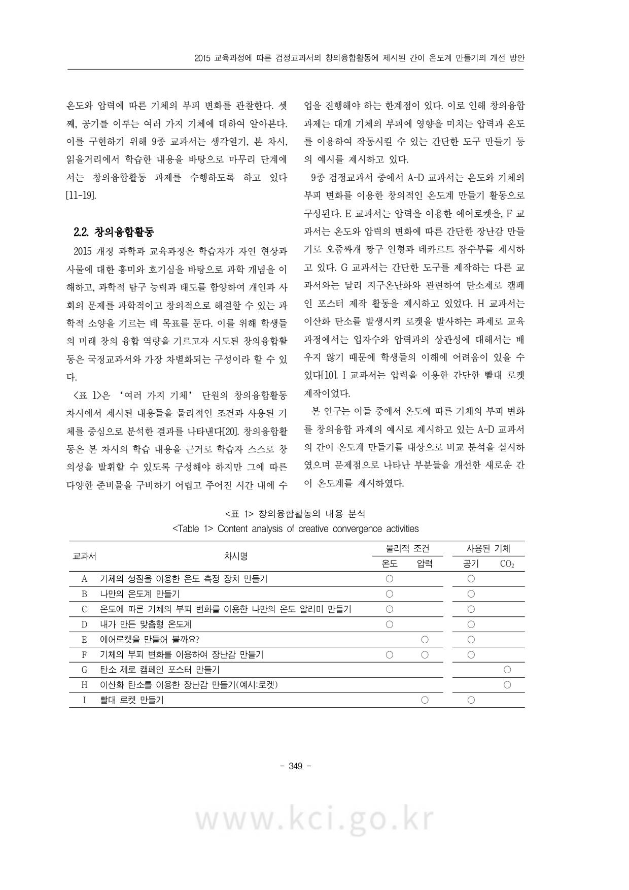
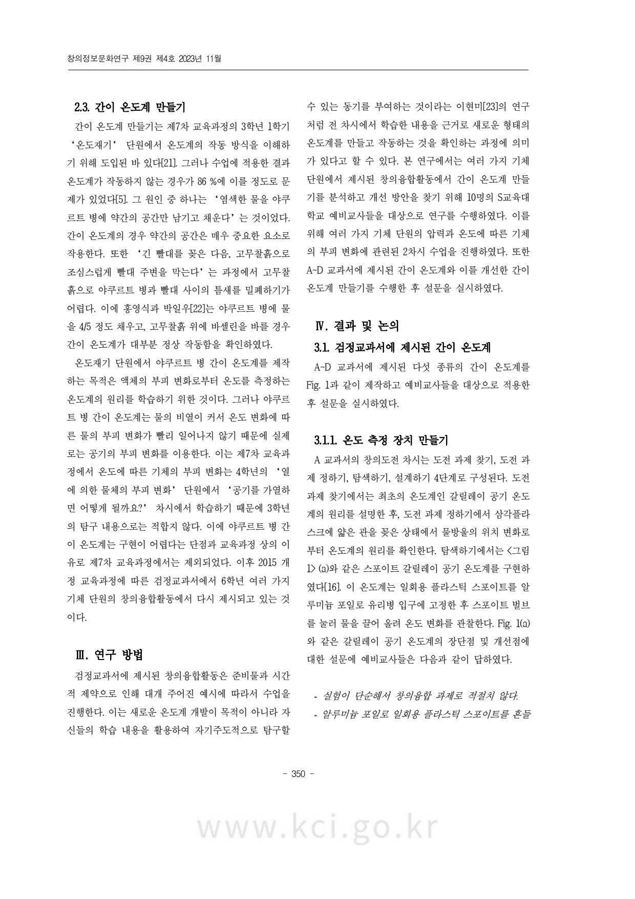
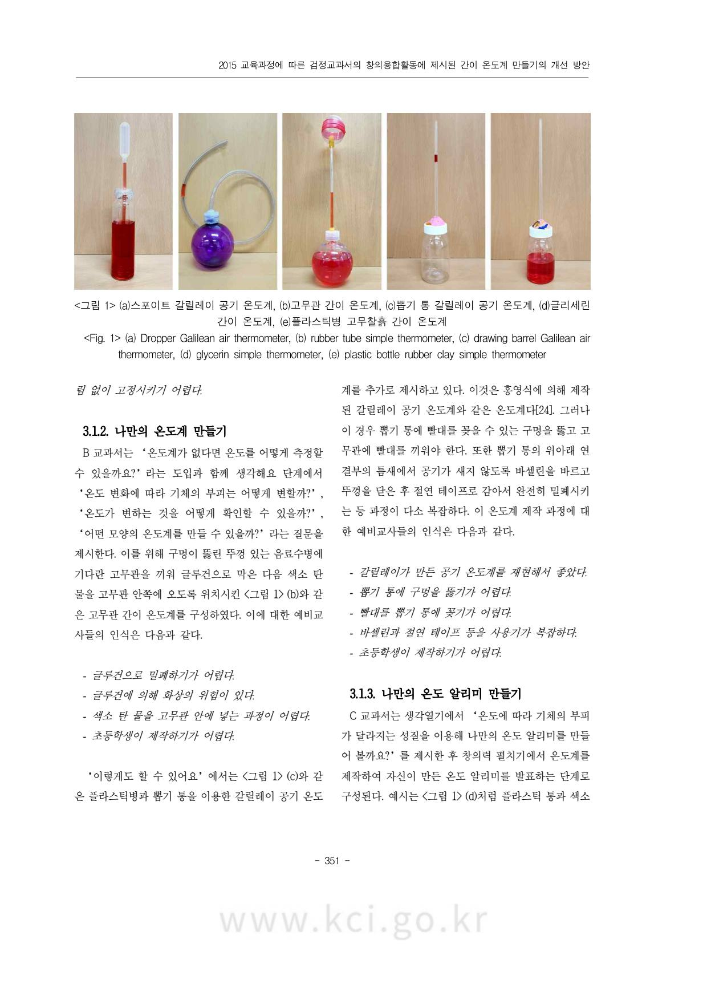
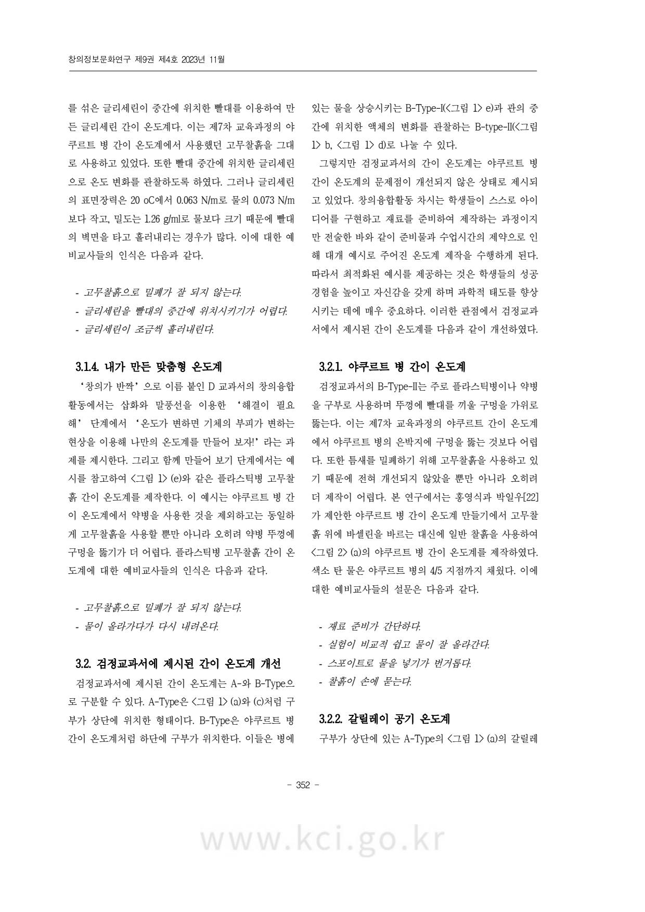
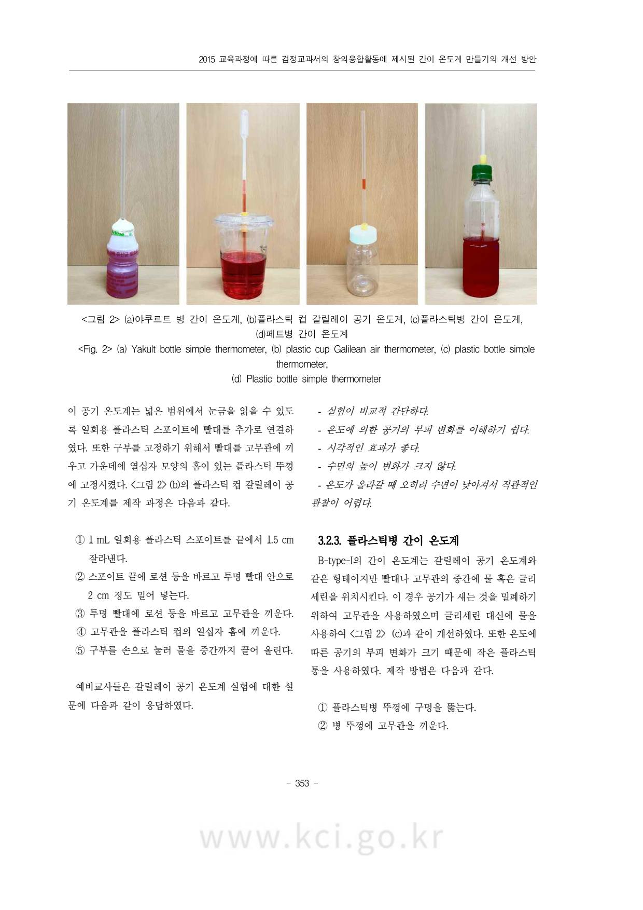
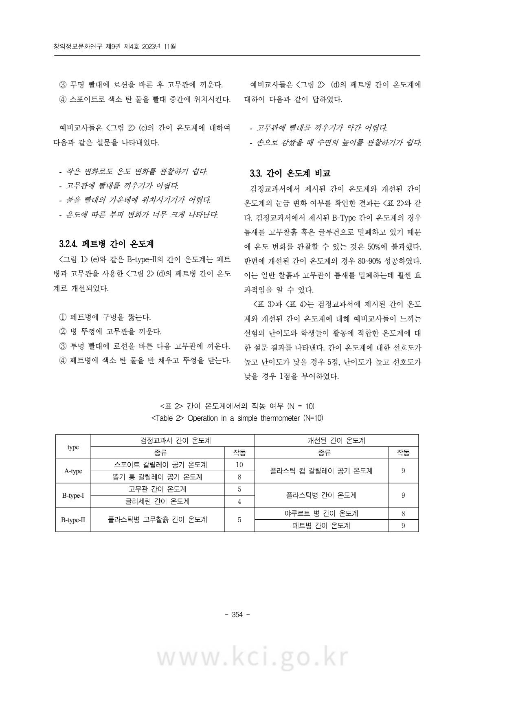
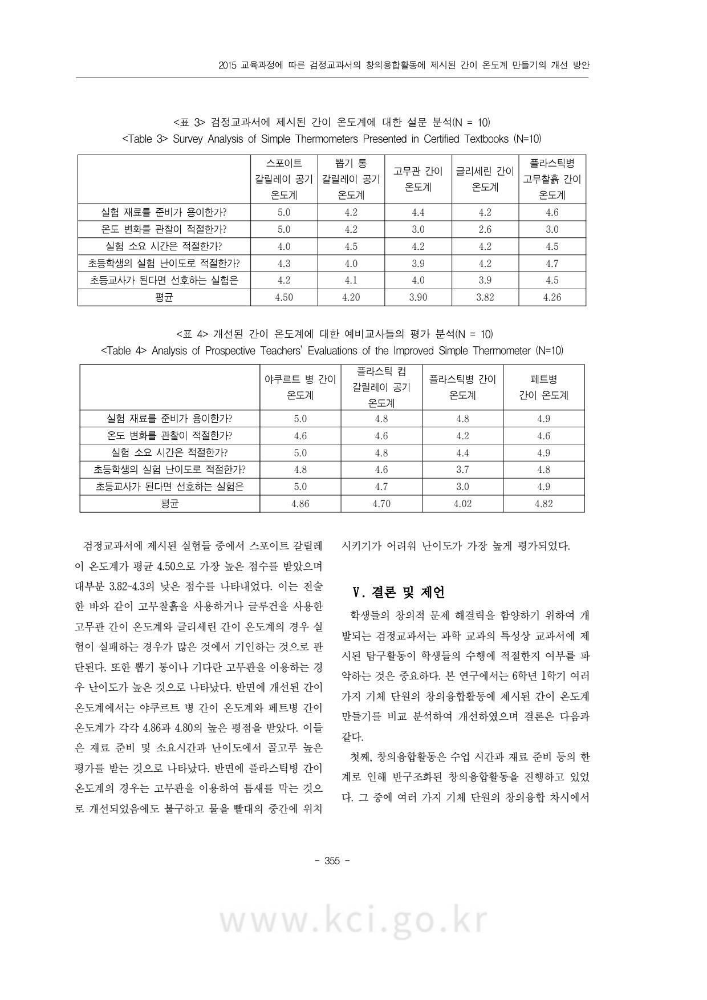
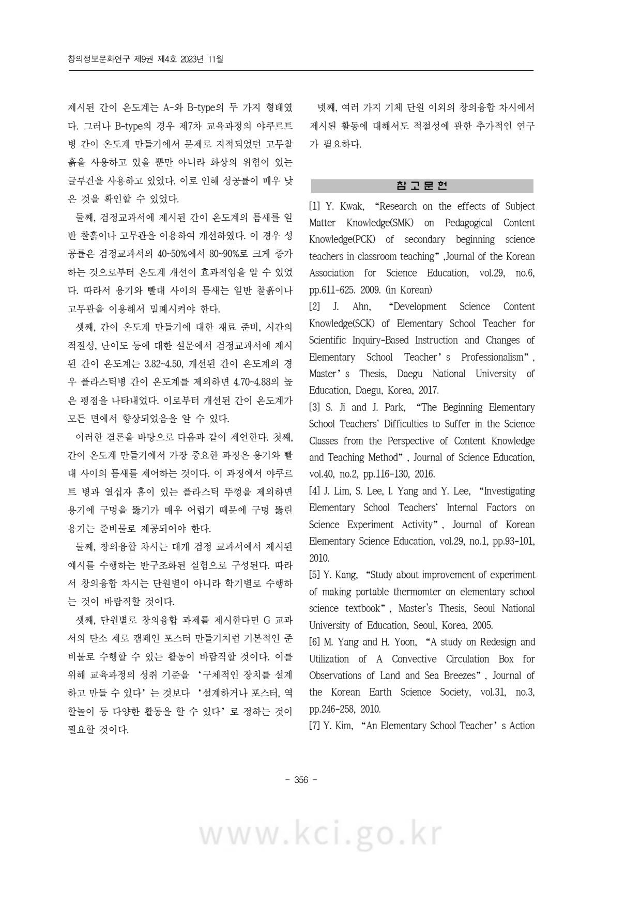
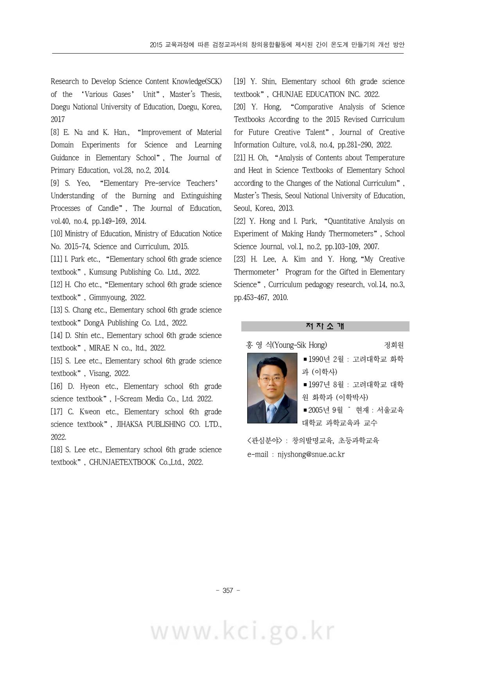

Section-header2015 교육과정에 따른 검정교과서의 창의융합활동에 제시된 간이 온도계 만들기의 개선 방안
Text홍영식
Text서울교육대학교
Section-header요 약
Text본 연구에서는 2015 개정교육과정에 따라 집필된 9 종 검정 과학교과서의 ‘여러 가지 기체’ 단원 중에서 ‘창의융합차시’의 온도계 만들기 탐구 활동에 대한 개선 방안을 제시하였다. 이전 차시의 내용을 바탕으로 미래 인재 양성과 창의적 문제 해결 능력을 배양하기 위한 창의융합차시는 주로 온도 혹은 압력에 의한 부피 변화를 이용한 온도계나 로켓 만들기로 제시된다. 그 중 온도에 따른 부피 변화를 이용한 간이 온도계 제작은 이전에 제기되었던 문제점 등이 개선되지 않은 채 제시되고 있었다. 이에 예비교사들을 대상으로 야쿠르트병 간이 온도계 등의 개선된 간이 온도계를 적용한 결과 플라스틱병 간이 온도계를 제외한 모든 간이 온도계에 대해 매우 향상된 결과를 나타내었다. 이러한 창의융합차시 활동의 개선은 미래 과학자를 꿀꾸는 학생들에게 성공 경험을 제공함으로서 과학에 대한 자신감과 함께 창의적인 미래 인재 양성에 기여할 것이다.
Text■ 중심어 : 창의융합활동, 간이 온도계, 여러 가지 기체
Section-headerImprovement Plan for Making a Simple Thermometer Presented in the Creative Convergence Activity of the Certified Textbook According to the 2015 Curriculum
TextYoung-Sik Hong
TextSeoul National University of Education
Section-headerAbstract
TextIn this study, we compared and analyzed the exploratory activities of ‘Creative Convergence Challenge’ among the ‘Various Gases’ unit in 9 types of certified science textbooks written according to the 2015 revised curriculum and suggested improvement measures. Based on the content of the previous lesson, the creative convergence lesson to cultivate creative problem-solving skills is mainly presented as making a thermometer or rocket using volume changes due to temperature or pressure. Among them, the production of a simple thermometer using volume change according to temperature was presented without any improvement in the problems previously raised. Accordingly, as a result of applying improved simple thermometers such as the Yakult bottle simple thermometer to prospective teachers, improved results were shown for simple thermometers excluding the plastic bottle simple thermometer. Improvements in these creative convergence activities will contribute to nurturing creative future talent along with confidence in science by providing success experiences to students who dream of becoming future scientists.
Text■ Keyword : Creative Convergence Activity, Simple Thermometer, Various Gases
Text과학교육의 중요한 목표는 미래 창의 인재 양성을 위해 자연 현상과 사물에 대하여 호기심과 흥미를 가지고, 과학의 핵심 개념에 대한 이해와 탐구 능력의 함양을 통하여, 개인과 사회의 문제를 과학적이고 창의적으로 해결하기 위한 과학적 소양을 기르는 것이다(교육부, 2015). 과학 교과서는 이러한 목표를 구현하기 위하여 학생들의 인지 능력 발달 정도를 고려하여 학습할 수 있도록 구성된 교수 학습 자료이다. 따라서 각 단원과 차시에서 제시되는 내용 지식과 탐구활동은 이러한 과학적 소양을 함양시킬 수 있도록 국가에서 제시된 교육 과정에 따라 집필되는 가장 기초적인 자료이다.
Text이에 교육부는 국정교과서에서 제시되는 특정 개념과 지식을 일방적으로 전달하는 교육의 한계를 벗어나기 위해 2019년에 초등 3~6학년 수학, 사회, 과학 교과서를 검정 체제로 전환하였다. 이러한 교과서 발행체제의 변화는 교육 당사자들이 각 학교별에 처한 학습 상황에 알맞은 최적인 교과서를 선택할 수 있도록 함으로서 좋은 교과서 제작을 위한 출판사의 노력을 촉진하고, 학생들에 대한 교육적 효과를 높이기 위한 것이다.
Text이 중에서 과학교과서는 내용 지식의 이해와 함께 탐구활동이 포함되기 때문에 이의 성공 여부는 학생들의 흥미도를 향상시키는데 매우 중요한 요소다. 또한 교사의 수업전문성 향상을 위해 과학교사의 내용 지식이 교수학습에 미치는 영향 등에 대한 연구가 활발히 진행되어 왔다[1-3]. 그럼에도 불구하고 탐구활동은 준비물, 실험 과정의 난이도, 실험 조건의 오류 등으로 인해 많은 어려움을 겪게 된다. 특히 탐구활동의 수행 시 다양한 이유로 인해 발생하는 문제점은 교사와 학생들의 자신감 결여와 오개념을 형성하며 교사는 해당 실험을 기피하게 된다[4]. 예를 들어 제7차 교육과정의 3학년 ‘온도재기’ 단원에서 제시되었던 야쿠르트 병을 이용한 간이온도계 만들기는 학생들의 성공률이 14%에 불과했으며 이는 교사뿐만 아니라 과학 과목이 처음인 학생들에게 과학을 기피하는 요인이 되었다[5]. 또한
Text2009 개정 교육과정에서 도입된 5학년의 ‘날씨와 우리 생활’ 단원의 대류상자 실험도 지속적인 개선이 이루어졌지만 탐구활동이 어려움을 겪는 경우가 많았다[6]. 따라서 창의적인 미래 인재의 과학적 소양을 함양하기 위해서는 탐구활동의 최적화가 반드시 필요하다[7-9].
Text더 나아가 3~4학년은 7종 검정교과서, 5~6학년은 9종 검정교과서 중에서 택일하여 수업을 진행하기 때문에 각 교과서에 제시된 탐구활동의 구현 여부가 매우 중요하다. 특히 학생들의 창의성 향상을 위해 도입된 ‘도전! 창의융합’ 차시의 경우 학습 내용을 바탕으로 창의적인 구현을 요구하고 있지만, 준비물과 수업 시간상의 제약으로 인해 제시된 예시를 수업에 적용하는 경우가 많다. 따라서 비록 창의융합활동의 예시라 할지라도 학생들이 실제로 구현할 수 있는 탐구활동으로 제시하는 것이 매우 중요하다.
Text본 논문에서는 2015 개정 교육과정에 따른 9종 검정교과서의 6학년 1학기 ‘여러 가지 기체’ 단원에서 창의융합활동에서 제시된 탐구활동의 적절성과 구현 여부 및 개선 방안에 대하여 검증하고자 한다. 특히 온도에 따른 기체의 부피 변화를 이용한 간이 온도계 활동의 비교 분석을 통해 탐구활동을 원활히 수행하기 위한 개선 방안을 제시하였다.
Section-header# II. 검정 교과서 비교 분석
Section-header## 2.1. 여러 가지 기체 단원
Text초등과학의 물질 영역에서 기체의 부피에 영향을 미치는 온도와 압력 및 여러 가지 기체의 발견은 물질을 구성하는 기본 단위인 원자로 나아가는 개념 단계이다. 이러한 관점에서 ‘여러 가지 기체’ 단원에서는 압력과 부피, 온도와 부피, 여러 가지 기체의 특성에 관련된 내용을 제시하고 있다. 다만 입자 개념은 중등교육과정에서 제시되기 때문에 입자수와 부피의 관계는 다루지 않는다[10].
Text이 단원의 학습 목표는 세 가지로 제시된다. 첫째, 산소와 이산화 탄소를 발생시키고 성질을 확인한다. 둘째,
Page-footer- 348 -
Page-footerwww.kci.go.kr
第 3 页
原文件（悬停/点击区块联动）

解析输出（块级）
Page-header2015 교육과정에 따른 검정교과서의 창의융합활동에 제시된 간이 온도계 만들기의 개선 방안
Text온도와 압력에 따른 기체의 부피 변화를 관찰한다. 셋째, 공기를 이루는 여러 가지 기체에 대하여 알아본다. 이를 구현하기 위해 9종 교과서는 생각열기, 본 차시, 읽을거리에서 학습한 내용을 바탕으로 마무리 단계에서는 창의융합활동 과제를 수행하도록 하고 있다[11-19].
Section-header## 2.2. 창의융합활동
Text2015 개정 과학과 교육과정은 학습자가 자연 현상과 사물에 대한 흥미와 호기심을 바탕으로 과학 개념을 이해하고, 과학적 탐구 능력과 태도를 함양하여 개인과 사회의 문제를 과학적이고 창의적으로 해결할 수 있는 과학적 소양을 기르는 데 목표를 둔다. 이를 위해 학생들의 미래 창의 융합 역량을 기르고자 시도된 창의융합활동은 국정교과서와 가장 차별화되는 구성이라 할 수 있다.
Text<표 1>은 ‘여러 가지 기체’ 단원의 창의융합활동 차시에서 제시된 내용들을 물리적인 조건과 사용된 기체를 중심으로 분석한 결과를 나타낸다[20]. 창의융합활동은 본 차시의 학습 내용을 근거로 학습자 스스로 창의성을 발휘할 수 있도록 구성해야 하지만 그에 따른 다양한 준비물을 구비하기 어렵고 주어진 시간 내에 수
Text업을 진행해야 하는 한계점이 있다. 이로 인해 창의융합과제는 대개 기체의 부피에 영향을 미치는 압력과 온도를 이용하여 작동시킬 수 있는 간단한 도구 만들기 등의 예시를 제시하고 있다.
Text9종 검정교과서 중에서 A~D 교과서는 온도와 기체의 부피 변화를 이용한 창의적인 온도계 만들기 활동으로 구성된다. E 교과서는 압력을 이용한 에어로켓을, F 교과서는 온도와 압력의 변화에 따른 간단한 장난감 만들기로 오줄싸개 쫀구 인형과 데카르트 잠수부를 제시하고 있다. G 교과서는 간단한 도구를 제작하는 다른 교과서와는 달리 지구온난화와 관련하여 탄소제로 캠페인 포스터 제작 활동을 제시하고 있었다. H 교과서는 이산화 탄소를 발생시켜 로켓을 발사하는 과제로 교육과정에서는 입자수와 압력과의 상관성에 대해서는 배우지 않기 때문에 학생들의 이해에 어려움이 있을 수 있다[10]. I 교과서는 압력을 이용한 간단한 빨대 로켓 제작이었다.
Text본 연구는 이들 중에서 온도에 따른 기체의 부피 변화를 창의융합 과제의 예시로 제시하고 있는 A~D 교과서의 간이 온도계 만들기를 대상으로 비교 분석을 실시하였으며 문제점으로 나타난 부분들을 개선한 새로운 간이 온도계를 제시하였다.
Caption<표 1> 창의융합활동의 내용 분석 <Table 1> Content analysis of creative convergence activities
Table
교과서
차시명
물리적 조건
사용된 기체
온도
압력
공기
CO2
A
기체의 성질을 이용한 온도 측정 장치 만들기
○
○
B
나만의 온도계 만들기
○
○
C
온도에 따른 기체의 부피 변화를 이용한 나만의 온도 알리미 만들기
○
○
D
내가 만든 맞춤형 온도계
○
○
E
에어로켓을 만들어 볼까요?
○
○
F
기체의 부피 변화를 이용하여 장난감 만들기
○
○
○
G
탄소 제로 캠페인 포스터 만들기
○
H
이산화 탄소를 이용한 장난감 만들기(예시:로켓)
○
I
ebb로켓 만들기
○
○
Page-footer- 349 -
Page-footerwww.kci.go.kr
第 4 页
原文件（悬停/点击区块联动）

解析输出（块级）
Page-header창의정보문화연구 제9권 제4호 2023년 11월
Section-header## 2.3. 간이 온도계 만들기
Text간이 온도계 만들기는 제7차 교육과정의 3학년 1학기 ‘온도재기’ 단원에서 온도계의 작동 방식을 이해하기 위해 도입된 바 있다[21]. 그러나 수업에 적용한 결과 온도계가 작동하지 않는 경우가 86%에 이를 정도로 문제가 있었다[5]. 그 원인 중 하나는 ‘염색한 물을 야쿠르트 병에 약간의 공간만 남기고 채운다’는 것이었다. 간이 온도계의 경우 약간의 공간은 매우 중요한 요소로 작용한다. 또한 ‘긴 빨대를 꽃은 다음, 고무찰흡으로 조심스럽게 빨대 주변을 막는다’는 과정에서 고무찰흡으로 야쿠르트 병과 빨대 사이의 틈새를 밀폐하기가 어렵다. 이에 홍영식과 박일우[22]는 야쿠르트 병에 물을 4/5 정도 채우고, 고무찰흡 위에 바셀린을 바를 경우 간이 온도계가 대부분 정상 작동함을 확인하였다.
Text온도재기 단원에서 야쿠르트 병 간이 온도계를 제작하는 목적은 액체의 부피 변화로부터 온도를 측정하는 온도계의 원리를 학습하기 위한 것이다. 그러나 야쿠르트 병 간이 온도계는 물의 비열이 커서 온도 변화에 따른 물의 부피 변화가 빨리 일어나지 않기 때문에 실제로는 공기의 부피 변화를 이용한다. 이는 제7차 교육과정에서 온도에 따른 기체의 부피 변화는 4학년의 ‘열에 의한 물체의 부피 변화’ 단원에서 ‘공기를 가열하면 어떻게 될까?’ 차시에서 학습하기 때문에 3학년의 탐구 내용으로는 적합지 않다. 이에 야쿠르트 병 간이 온도계는 구현이 어렵다는 단점과 교육과정 상의 이유로 제7차 교육과정에서는 제외되었다. 이후 2015 개정 교육과정에 따른 검정교과서에서 6학년 여러 가지 기체 단원의 창의융합활동에서 다시 제시되고 있는 것이다.
Section-header## Ⅲ. 연구 방법
Text검정교과서에 제시된 창의융합활동은 준비물과 시간적 제약으로 인해 대개 주어진 예시에 따라서 수업을 진행한다. 이는 새로운 온도계 개발이 목적이 아니라 자신들의 학습 내용을 활용하여 자기주도적으로 탐구할
Text수 있는 동기를 부여하는 것이라는 이현미[23]의 연구처럼 전 차시에서 학습한 내용을 근거로 새로운 형태의 온도계를 만들고 작동하는 것을 확인하는 과정에 의미가 있다고 할 수 있다. 본 연구에서는 여러 가지 기체 단원에서 제시된 창의융합활동에서 간이 온도계 만들기를 분석하고 개선 방안을 찾기 위해 10명의 S교육대학교 예비교사들을 대상으로 연구를 수행하였다. 이를 위해 여러 가지 기체 단원의 압력과 온도에 따른 기체의 부피 변화에 관련된 2차시 수업을 진행하였다. 또한 A~D 교과서에 제시된 간이 온도계와 이를 개선한 간이 온도계 만들기를 수행한 후 설문을 실시하였다.
Section-header## IV. 결과 및 논의
Section-header### 3.1. 검정교과서에 제시된 간이 온도계
TextA~D 교과서에 제시된 다섯 종류의 간이 온도계를 Fig. 1과 같이 제작하고 예비교사들을 대상으로 적용한 후 설문을 실시하였다.
Section-header#### 3.1.1. 온도 측정 장치 만들기
TextA 교과서의 창의도전 차시는 도전 과제 찾기, 도전 과제 정하기, 탐색하기, 설계하기 4단계로 구성된다. 도전 과제 찾기에서는 최초의 온도계인 갈릴레이 공기 온도계의 원리를 설명한 후, 도전 과제 정하기에서 삼각플라스크에 얇은 관을 꽃은 상태에서 물방울의 위치 변화로부터 온도계의 원리를 확인한다. 탐색하기에서는 <그림 1>(a)와 같은 스포이트 갈릴레이 공기 온도계를 구현하였다[16]. 이 온도계는 일회용 플라스틱 스포이트를 알루미늄 포일로 유리병 입구에 고정한 후 스포이트 벌브를 눌러 물을 끌어 올려 온도 변화를 관찰한다. Fig. 1(a)와 같은 갈릴레이 공기 온도계의 장단점 및 개선점에 대한 설문에 예비교사들은 다음과 같이 답하였다.
Text- 실험이 단순해서 창의융합 과제로 적절치 않다. - 알루미늄 포일로 일회용 플라스틱 스포이트를 흔들
Page-footer- 350 -
Page-footerwww.kci.go.kr
第 5 页
原文件（悬停/点击区块联动）

解析输出（块级）
Page-header2015 교육과정에 따른 검정교과서의 창의융합활동에 제시된 간이 온도계 만들기의 개선 방안
TextB 교과서는 ‘온도계가 없다면 온도를 어떻게 측정할 수 있을까?’ 라는 도입과 함께 생각해요 단계에서 ‘온도 변화에 따라 기체의 부피는 어떻게 변할까?’, ‘온도가 변하는 것을 어떻게 확인할 수 있을까?’, ‘어igen 모양의 온도계를 만들 수 있을까?’ 라는 질문을 제시한다. 이를 위해 구멍이 뚫린 뚜皮 있는 음료수병에 기다란 고무관을 끼워 글루건으로 막은 다음 색소 탄 물을 고무관 안쪽에 오도록 위치시킨 <그림 1> (b)와 같은 고무관 간이 온도계를 구성하였다. 이에 대한 예비교 사들의 인식은 다음과 같다.
Text- 글루건으로 밀폐하기가 어렵다.
Text- 글루건에 의해 화상의 위험이 있다.
Text- 색소 탄 물을 고무관 안에 넣는 과정이 어렵다.
Text- 초등학생이 제작하기가 어렵다.
Text‘이렇게도 할 수 있어요’에서는 <그림 1> (c)와 같은 플라스틱병과 뽑기 통을 이용한 갈릴레이 공기 온도
Text계를 추가로 제시하고 있다. 이것은 홍영식에 의해 제작된 갈릴레이 공기 온도계와 같은 온도계다[24]. 그러나 이 경우 뽑기 통에 빨대를 꽂을 수 있는 구멍을 뚫고 고무관에 빨대를 끼워야 한다. 또한 뽑기 통의 위아래 연결부의 틈새에서 공기가 새지 않도록 바셀린을 바르고 뚜皮을 닫은 후 절연 테이프로 감아서 완전히 밀폐시키는 등 과정이 다소 복잡하다. 이 온도계 제작 과정에 대한 예비교사들의 인식은 다음과 같다.
Text- 갈릴레이가 만든 공기 온도계를 제현해서 좋았다.
Text- 뽑기 통에 구멍을 뚫기가 어렵다.
Text- 빨대를 뽑기 통에 꽂기가 어렵다.
Text- 바셀린과 절연 테이프 등을 사용기가 복잡하다.
Text- 초등학생이 제작하기가 어렵다.
Section-header### 3.1.3. 나만의 온도 알리미 만들기
TextC 교과서는 생각열기에서 ‘온도에 따라 기체의 부피가 달라지는 성질을 이용해 나만의 온도 알리미를 만들어 볼까요?’를 제시한 후 창의력 펼치기에서 온도계를 제작하여 자신이 만든 온도 알리미를 발표하는 단계로 구성된다. 예시는 <그림 1> (d)처럼 플라스틱 통과 색소
Page-footer- 351 -
Page-footerwww.kci.go.kr
第 6 页
原文件（悬停/点击区块联动）

解析输出（块级）
Page-header창의정보문화연구 제9권 제4호 2023년 11월
Text를 섞은 글리세린이 중간에 위치한 빨대를 이용하여 만든 글리세린 간이 온도계다. 이는 제7차 교육과정의 야쿠르트 병 간이 온도계에서 사용했던 고무찰흡을 그대로 사용하고 있었다. 또한 빨대 중간에 위치한 글리세린으로 온도 변화를 관찰하도록 하였다. 그러나 글리세린의 표면장력은 20 oC에서 0.063 N/m로 물의 0.073 N/m보다 작고, 밀도는 1.26 g/ml로 물보다 크기 때문에 빨대의 벽면을 타고 흘러내리는 경우가 많다. 이에 대한 예비교사들의 인식은 다음과 같다.
Text- 고무찰흡으로 밀폐가 잘 되지 않는다. - 글리세린을 빨대의 중간에 위치시키기가 어렵다. - 글리세린이 조금씩 흘러내린다.
Section-header### 3.1.4. 내가 만든 맞춤형 온도계
Text‘창의가 반짝’으로 이름 붙인 D 교과서의 창의융합활동에서는 삽화와 말풍선을 이용한 ‘해결이 필요해’ 단계에서 ‘온도가 변하면 기체의 부피가 변하는 현상을 이용해 나만의 온도계를 만들어 보자!’라는 과제를 제시한다. 그리고 함께 만들어 보기 단계에서는 예시를 참고하여 <그림 1> (e)와 같은 플라스틱병 고무찰흡 간이 온도계를 제작한다. 이 예시는 야쿠르트 병 간이 온도계에서 약병을 사용한 것을 제외하고는 동일하게 고무찰흡을 사용할 뿐만 아니라 오히려 약병 뚜c경에 구멍을 뚫기가 더 어렵다. 플라스틱병 고무찰흡 간이 온도계에 대한 예비교사들의 인식은 다음과 같다.
Text- 고무찰흡으로 밀폐가 잘 되지 않는다. - 물이 올라가다가 다시 내려온다.
Section-header## 3.2. 검정교과서에 제시된 간이 온도계 개선
Text검정교과서에 제시된 간이 온도계는 A-와 B-Type으로 구분할 수 있다. A-Type은 <그림 1> (a)와 (c)처럼 구부가 상단에 위치한 형태이다. B-Type은 야쿠르트 병 간이 온도계처럼 하단에 구부가 위치한다. 이들은 병에
Text있는 물을 상승시키는 B-Type-I(<그림 1> e)과 관의 중간에 위치한 액체의 변화를 관찰하는 B-type-II(<그림 1> b, <그림 1> d)로 나놀 수 있다.
Text그렇지만 검정교과서의 간이 온도계는 야쿠르트 병 간이 온도계의 문제점이 개선되지 않은 상태로 제시되고 있었다. 창의융합활동 차시는 학생들이 스스로 아이디어를 구현하고 재료를 준비하여 제작하는 과정이지만 전술한 바와 같이 준비물과 수업시간의 제약으로 인해 대개 예시로 주어진 온도계 제작을 수행하게 된다. 따라서 최적화된 예시를 제공하는 것은 학생들의 성공 경험을 높이고 자신감을 갖게 하며 과학적 태도를 향상시키는 데에 매우 중요하다. 이러한 관점에서 검정교과서에서 제시된 간이 온도계를 다음과 같이 개선하였다.
Section-header### 3.2.1. 야쿠르트 병 간이 온도계
Text검정교과서의 B-Type-II는 주로 플라스틱병이나 약병을 구부로 사용하며 뚜c경에 빨대를 끼울 구멍을 가위로 뚫는다. 이는 제7차 교육과정의 야쿠르트 간이 온도계에서 야쿠르트 병의 은박지에 구멍을 뚫는 것보다 어렵다. 또한 틈새를 밀폐하기 위해 고무찰흡을 사용하고 있기 때문에 전혀 개선되지 않았을 뿐만 아니라 오히려 더 제작이 어렵다. 본 연구에서는 홍영식과 박일우[22]가 제안한 야쿠르트 병 간이 온도계 만들기에서 고무찰흡 위에 바셀린을 바르는 대신에 일반 찰흡을 사용하여 <그림 2> (a)의 야쿠르트 병 간이 온도계를 제작하였다. 색소 탄 물은 야쿠르트 병의 4/5 지점까지 채웠다. 이에 대한 예비교사들의 설문은 다음과 같다.
Text- 재료 준비가 간단하다. - 실험이 비교적 쉽고 물이 잘 올라간다. - 스포이트로 물을 넣기가 번거롭다. - 찰흡이 손에 묻는다.
Section-header### 3.2.2. 갈릴레이 공기 온도계
Text구부가 상단에 있는 A-Type의 <그림 1> (a)의 갈릴레이
Page-footer- 352 -
Textwww.kci.go.kr
第 7 页
原文件（悬停/点击区块联动）

解析输出（块级）
Page-header2015 교육과정에 따른 검정교과서의 창의융합활동에 제시된 간이 온도계 만들기의 개선 방안
Picture
Caption<그림 2> (a)야쿠르트 병 간이 온도계, (b)플라스틱 컵 갈릴레이 공기 온도계, (c)플라스틱병 간이 온도계, (d)페트병 간이 온도계 <Fig. 2> (a) Yakult bottle simple thermometer, (b) plastic cup Galilean air thermometer, (c) plastic bottle simple thermometer, (d) Plastic bottle simple thermometer
Text이 공기 온도계는 넓은 범위에서 눈금을 읽을 수 있도록 일회용 플라스틱 스포이트에 빨대를 추가로 연결하였다. 또한 구부를 고정하기 위해서 빨대를 고무관에 끼우고 가운데에 열십자 모양의 흄이 있는 플라스틱 뚜皮에 고정시켰다. <그림 2> (b)의 플라스틱 컵 갈릴레이 공기 온도계를 제작 과정은 다음과 같다.
Text① 1 mL 일회용 플라스틱 스포이트를 끝에서 1.5 cm 잘라낸다.
Text② 스포이트 끝에 로션 등을 바르고 투명 빨대 안으로 2 cm 정도 밀어 넣는다.
Text③ 투명 빨대에 로션 등을 바르고 고무관을 끼운다.
Text④ 고무관을 플라스틱 컵의 열십자 흄에 끼운다.
Text⑤ 구부를 손으로 눌러 물을 중간까지 끌어 올린다.
Text예비교사들은 갈릴레이 공기 온도계 실험에 대한 설문에 다음과 같이 응답하였다.
Text- 실험이 비교적 간단하다.
Text- 온도에 의한 공기의 부피 변화를 이해하기 쉽다.
Text- 시각적인 효과가 좋다.
Text- 수면의 높이 변화가 크지 않다.
Text- 온도가 올라갈 때 오히려 수면이 낮아져서 직관적인 관찰이 어렵다.
Section-header### 3.2.3. 플라스틱병 간이 온도계
TextB-type-I의 간이 온도계는 갈릴레이 공기 온도계와 같은 형태이지만 빨대나 고무관의 중간에 물 혹은 글리세린을 위치시킨다. 이 경우 공기가 새는 것을 밀폐하기 위하여 고무관을 사용하였으며 글리세린 대신에 물을 사용하여 <그림 2> (c)과 같이 개선하였다. 또한 온도에 따른 공기의 부피 변화가 크기 때문에 작은 플라스틱 통을 사용하였다. 제작 방법은 다음과 같다.
Text① 플라스틱병 뚜皮에 구멍을 뚫는다.
Text② 병 뚜皮에 고무관을 끼운다.
Page-footer- 353 -
Page-footerwww.kci.go.kr
第 8 页
原文件（悬停/点击区块联动）

解析输出（块级）
Page-header창의정보문화연구 제9권 제4호 2023년 11월
Text③ 투명 빨대에 로션을 바른 후 고무관에 끼운다. ④ 스포이트로 색소 탄 물을 빨대 중간에 위치시킨다.
Text예비교사들은 <그림 2> (c)의 간이 온도계에 대하여 다음과 같은 설문을 나타내었다.
Text- 작은 변화로도 온도 변화를 관찰하기 쉽다. - 고무관에 빨대를 끼우기가 어렵다. - 물을 빨대의 가운데에 위치시기기가 어렵다. - 온도에 따른 부피 변화가 너무 크게 나타난다.
Section-header### 3.2.4. 페트병 간이 온도계
Text<그림 1> (e)와 같은 B-type-II의 간이 온도계는 페트병과 고무관을 사용한 <그림 2> (d)의 페트병 간이 온도계로 개선되었다.
Text① 페트병에 구멍을 뚫는다. ② 병 뚜皮에 고무관을 끼운다. ③ 투명 빨대에 로션을 바른 다음 고무관에 끼운다. ④ 페트병에 색소 탄 물을 반 채우고 뚜皮을 닫는다.
Text예비교사들은 <그림 2> (d)의 페트병 간이 온도계에 대하여 다음과 같이 답하였다.
Text- 고무관에 빨대를 끼우기가 약간 어렵다. - 손으로 감oy을 때 수면의 높이를 관찰하기가 쉽다.
Section-header### 3.3. 간이 온도계 비교
Text검정교과서에서 제시된 간이 온도계와 개선된 간이 온도계의 눈금 변화 여부를 확인한 결과는 <표 2>와 같다. 검정교과서에서 제시된 B-Type 간이 온도계의 경우 틈새를 고무찰흡 혹은 글루건으로 밀폐하고 있기 때문에 온도 변화를 관찰할 수 있는 것은 50%에 불과했다. 반면에 개선된 간이 온도계의 경우 80~90% 성공하였다. 이는 일반 찰흡과 고무관이 틈새를 밀폐하는데 훨씬 효과적임을 알 수 있다.
Text<표 3>과 <표 4>는 검정교과서에 제시된 간이 온도계와 개선된 간이 온도계에 대해 예비교사들이 느끼는 실험의 난이도와 학생들이 활동에 적합한 온도계에 대한 설문 결과를 나타낸다. 간이 온도계에 대한 선호도가 높고 난이도가 낮을 경우 5점, 난이도가 높고 선호도가 낮을 경우 1점을 부여하였다.
Caption<표 2> 간이 온도계에서의 작동 여부 (N = 10) <Table 2> Operation in a simple thermometer (N=10)
Table
type
검정교과서 간이 온도계
개선된 간이 온도계
종류
작동
종류
작동
A-type
스포이트 갈릴레이 공기 온도계
10
플라스틱 컵 갈릴레이 공기 온도계
9
正기 통 갈릴레이 공기 온도계
8
B-type-I
고무관 간이 온도계
5
플라스틱병 간이 온도계
9
글리세린 간이 온도계
4
B-type-II
플라스틱병 고무찰흡 간이 온도계
5
야쿠르트 병 간이 온도계
8
페트병 간이 온도계
9
Page-footer- 354 -
Page-footerwww.kci.go.kr
第 9 页
原文件（悬停/点击区块联动）

解析输出（块级）
Page-header2015 교육과정에 따른 검정교과서의 창의융합활동에 제시된 간이 온도계 만들기의 개선 방안
Caption<표 3> 검정교과서에 제시된 간이 온도계에 대한 설문 분석(N = 10) <Table 3> Survey Analysis of Simple Thermometers Presented in Certified Textbooks (N=10)
Table
스포이트 갈릴레이 공기 온도계
正기 통 갈릴레이 공기 온도계
고무관 간이 온도계
글리세린 간이 온도계
플라스틱병 고무찰, 흙 간이 온도계
실험 재료를 준비가 용이한가?
5.0
4.2
4.4
4.2
4.6
온도 변화를 관찰이 적절한가?
5.0
4.2
3.0
2.6
3.0
실험 소요 시간은 적절한가?
4.0
4.5
4.2
4.2
4.5
초등학생의 실험 난이도로 적절한가?
4.3
4.0
3.9
4.2
4.7
초등교사가 된다면 선호하는 실험은
4.2
4.1
4.0
3.9
4.5
평균
4.50
4.20
3.90
3.82
4.26
Caption<표 4> 개선된 간이 온도계에 대한 예비교사들의 평가 분석(N = 10) <Table 4> Analysis of Prospective Teachers' Evaluations of the Improved Simple Thermometer (N=10)
Table
야쿠르트 병 간이 온도계
플라스틱 컵 갈릴레이 공기 온도계
플라스틱병 간이 온도계
페트병 간이 온도계
실험 재료를 준비가 용이한가?
5.0
4.8
4.8
4.9
온도 변화를 관찰이 적절한가?
4.6
4.6
4.2
4.6
실험 소요 시간은 적절한가?
5.0
4.8
4.4
4.9
초등학생의 실험 난이도로 적절한가?
4.8
4.6
3.7
4.8
초등교사가 된다면 선호하는 실험은
5.0
4.7
3.0
4.9
평균
4.86
4.70
4.02
4.82
Text검정교과서에 제시된 실험들 중에서 스포이트 갈릴레이 온도계가 평균 4.50으로 가장 높은 점수를 받았으며 대부분 3.82~4.3의 낮은 점수를 나타내었다. 이는 전술한 바와 같이 고무찰, 흙을 사용하거나 글루건을 사용한 고무관 간이 온도계와 글리세린 간이 온도계의 경우 실험이 실패하는 경우가 많은 것에서 기인하는 것으로 판단된다. 또한 뽑기 통이나 기다란 고무관을 이용하는 경우 난이도가 높은 것으로 나타났다. 반면에 개선된 간이 온도계에서는 야쿠르트 병 간이 온도계와 페트병 간이 온도계가 각각 4.86과 4.80의 높은 평점을 받았다. 이들은 재료 준비 및 소요시간과 난이도에서 골고루 높은 평가를 받는 것으로 나타났다. 반면에 플라스틱병 간이 온도계의 경우는 고무관을 이용하여 틈새를 막는 것으로 개선되었음에도 불구하고 물을 빨대의 중간에 위치
Text시키기가 어려워 난이도가 가장 높게 평가되었다.
Section-headerV. 결론 및 제언
Text학생들의 창의적 문제 해결력을 함양하기 위하여 개발되는 검정교과서는 과학 교과의 특성상 교과서에 제시된 탐구활동이 학생들의 수행에 적절한지 여부를 파악하는 것은 중요하다. 본 연구에서는 6학년 1학기 여러 가지 기체 단원의 창의융합활동에 제시된 간이 온도계 만들기를 비교 분석하여 개선하였으며 결론은 다음과 같다.
Text첫째, 창의융합활동은 수업 시간과 재료 준비 등의 한계로 인해 반구조화된 창의융합활동을 진행하고 있었다. 그 중에 여러 가지 기체 단원의 창의융합 차시에서
Page-footer- 355 -
Page-footerwww.kci.go.kr
第 10 页
原文件（悬停/点击区块联动）

解析输出（块级）
Page-header창의정보문화연구 제9권 제4호 2023년 11월
Text제시된 간이 온도계는 A-와 B-type의 두 가지 형태였다. 그러나 B-type의 경우 제7차 교육과정의 야쿠르트병 간이 온도계 만들기에서 문제로 지적되었던 고무찰흡을 사용하고 있을 뿐만 아니라 화상의 위험이 있는 글루건을 사용하고 있었다. 이로 인해 성공률이 매우 낮은 것을 확인할 수 있었다.
Text둘째, 검정교과서에 제시된 간이 온도계의 틈새를 일반 찰흡이나 고무관을 이용하여 개선하였다. 이 경우 성공률은 검정교과서의 40~50%에서 80~90%로 크게 증가하는 것으로부터 온도계 개선이 효과적임을 알 수 있었다. 따라서 용기와 빨대 사이의 틈새는 일반 찰흡이나 고무관을 이용해서 밀폐시켜야 한다.
Text셋째, 간이 온도계 만들기에 대한 재료 준비, 시간의 적절성, 난이도 등에 대한 설문에서 검정교과서에 제시된 간이 온도계는 3.82~4.50, 개선된 간이 온도계의 경우 플라스틱병 간이 온도계를 제외하면 4.70~4.88의 높은 평점을 나타내었다. 이로부터 개선된 간이 온도계가 모든 면에서 향상되었음을 알 수 있다.
Text이러한 결론을 바탕으로 다음과 같이 제언한다. 첫째, 간이 온도계 만들기에서 가장 중요한 과정은 용기와 빨대 사이의 틈새를 제어하는 것이다. 이 과정에서 야쿠르트병과 열십자 흄이 있는 플라스틱 뚜分을 제외하면 용기에 구멍을 뚫기가 매우 어렵기 때문에 구멍 뚫린 용기는 준비물로 제공되어야 한다.
Text둘째, 창의융합 차시는 대개 검정 교과서에서 제시된 예시를 수행하는 반구조화된 실험으로 구성된다. 따라서 창의융합 차시는 단원별이 아니라 학기별로 수행하는 것이 바람직할 것이다.
Text셋째, 단원별로 창의융합 과제를 제시한다면 G 교과서의 탄소 제로 캠페인 포스터 만들기처럼 기본적인 준비물로 수행할 수 있는 활동이 바람직할 것이다. 이를 위해 교육과정의 성취 기준을 ‘구체적인 장치를 설계하고 만들 수 있다’는 것보다 ‘설계하거나 포스터, 역할놀이 등 다양한 활동을 할 수 있다’로 정하는 것이 필요할 것이다.
Text넷째, 여러 가지 기체 단원 이외의 창의융합 차시에서 제시된 활동에 대해서도 적절성에 관한 추가적인 연구가 필요하다.
Section-header## 참 고 문 헌
Text[1] Y. Kwak, “Research on the effects of Subject Matter Knowledge(SMK) on Pedagogical Content Knowledge(PCK) of secondary beginning science teachers in classroom teaching”, Journal of the Korean Association for Science Education, vol.29, no.6, pp.611-625. 2009. (in Korean)
Text[2] J. Ahn, “Development Science Content Knowledge(SCK) of Elementary School Teacher for Scientific Inquiry-Based Instruction and Changes of Elementary School Teacher’s Professionalism”, Master’s Thesis, Daegu National University of Education, Daegu, Korea, 2017.
Text[3] S. Ji and J. Park, “The Beginning Elementary School Teachers’ Difficulties to Suffer in the Science Classes from the Perspective of Content Knowledge and Teaching Method”, Journal of Science Education, vol.40, no.2, pp.116-130, 2016.
Text[4] J. Lim, S. Lee, I. Yang and Y. Lee, “Investigating Elementary School Teachers’ Internal Factors on Science Experiment Activity”, Journal of Korean Elementary Science Education, vol.29, no.1, pp.93-101, 2010.
Text[5] Y. Kang, “Study about improvement of experiment of making portable thermometer on elementary school science textbook”, Master’s Thesis, Seoul National University of Education, Seoul, Korea, 2005.
Text[6] M. Yang and H. Yoon, “A study on Redesign and Utilization of A Convective Circulation Box for Observations of Land and Sea Breezes”, Journal of the Korean Earth Science Society, vol.31, no.3, pp.246-258, 2010.
Text[7] Y. Kim, “An Elementary School Teacher’s Action
Page-footer- 356 -
Page-footerwww.kci.go.kr
第 11 页
原文件（悬停/点击区块联动）

解析输出（块级）
Page-header2015 교육과정에 따른 검정교과서의 창의융합활동에 제시된 간이 온도계 만들기의 개선 방안
TextResearch to Develop Science Content Knowledge (SCK) of the ‘Various Gases’ Unit”, Master’s Thesis, Daegu National University of Education, Daegu, Korea, 2017
Text[8] E. Na and K. Han., “Improvement of Material Domain Experiments for Science and Learning Guidance in Elementary School”, The Journal of Primary Education, vol.28, no.2, 2014.
Text[9] S. Yeo, “Elementary Pre-service Teachers’ Understanding of the Burning and Extinguishing Processes of Candle”, The Journal of Education, vol.40, no.4, pp.149-169, 2014.
Text[10] Ministry of Education, Ministry of Education Notice No. 2015-74, Science and Curriculum, 2015.
Text[11] I. Park etc., “Elementary school 6th grade science textbook”, Kumsung Publishing Co. Ltd., 2022.
Text[12] H. Cho etc., “Elementary school 6th grade science textbook”, Gimmyoung, 2022.
Text[13] S. Chang etc., Elementary school 6th grade science textbook” DongA Publishing Co. Ltd., 2022.
Text[14] D. Shin etc., Elementary school 6th grade science textbook”, MIRAE N co., ltd., 2022.
Text[15] S. Lee etc., Elementary school 6th grade science textbook”, Visang, 2022.
Text[16] D. Hyeon etc., Elementary school 6th grade science textbook”, I-Scream Media Co., Ltd. 2022.
Text[17] C. Kweon etc., Elementary school 6th grade science textbook”, JIHAKSA PUBLISHING CO. LTD., 2022.
Text[18] S. Lee etc., Elementary school 6th grade science textbook”, CHUNJAETEXTBOOK Co.,Ltd., 2022.
Text[19] Y. Shin, Elementary school 6th grade science textbook”, CHUNJAE EDUCATION INC. 2022.
Text[20] Y. Hong, “Comparative Analysis of Science Textbooks According to the 2015 Revised Curriculum for Future Creative Talent”, Journal of Creative Information Culture, vol.8, no.4, pp.281-290, 2022.
Text[21] H. Oh, “Analysis of Contents about Temperature and Heat in Science Textbooks of Elementary School according to the Changes of the National Curriculum”, Master’s Thesis, Seoul National University of Education, Seoul, Korea, 2013.
Text[22] Y. Hong and I. Park, “Quantitative Analysis on Experiment of Making Handy Thermometers”, School Science Journal, vol.1, no.2, pp.103-109, 2007.
Text[23] H. Lee, A. Kim and Y. Hong, “My Creative Thermometer’ Program for the Gifted in Elementary Science”, Curriculum pedagogy research, vol.14, no.3, pp.453-467, 2010.